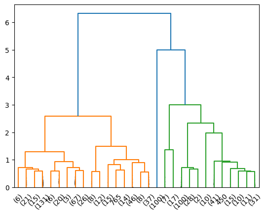
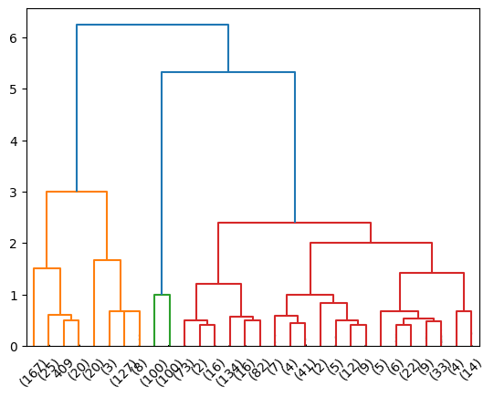
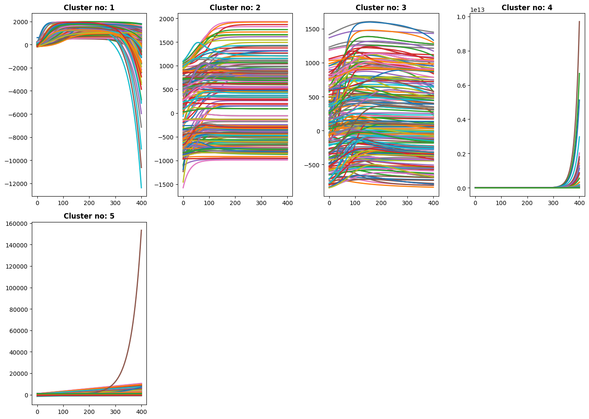

[64]:
import sys
sys.path.insert(0, "/Users/emirsener/Desktop/ts-clustering")
from simclstr.clusterer import perform_clustering, read_time_series
import os
[65]:
data_file_path_vensim = os.path.expanduser("~/Desktop/SESDYN_Basic_A/Basic_A_Vensim.xlsx")
ts_data_vensim = read_time_series(data_file_path_vensim)
clustering_results = perform_clustering(ts_data_vensim, cMethod='maxclust', cValue = 4, plotDendrogram=True, plotClusters=True)

[66]:
data_file_path_stellaff = os.path.expanduser("~/Desktop/SESDYN_Basic_A/Basic_A_StellaFF.xlsx")
ts_data_stellaff = read_time_series(data_file_path_stellaff)
clustering_results = perform_clustering(ts_data_stellaff, cMethod='maxclust', cValue = 5, plotDendrogram=True, plotClusters=True)

[67]:
data_file_path_stella2 = os.path.expanduser("~/Desktop/SESDYN_Basic_A/Basic_A_Stella2.xlsx")
ts_data_stella2 = read_time_series(data_file_path_stella2)
clustering_results = perform_clustering(ts_data_stella2, cMethod='maxclust', cValue = 5, plotDendrogram=True, plotClusters=True)
